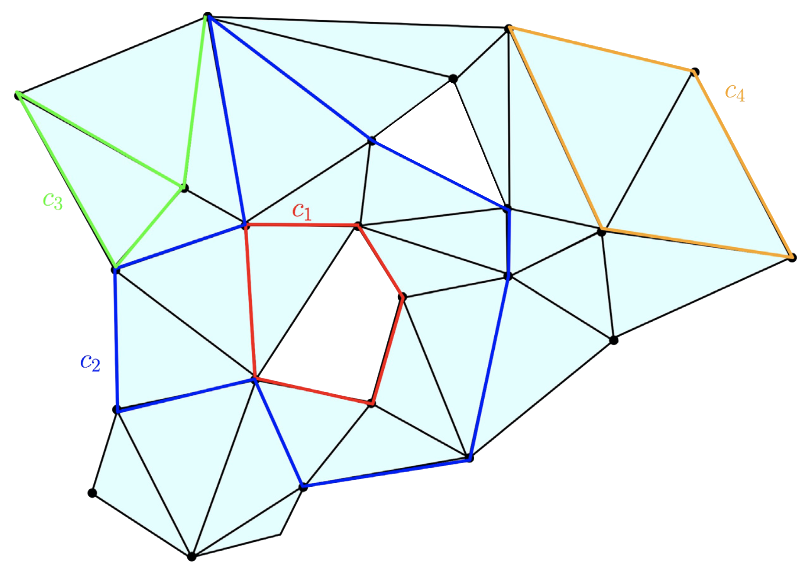
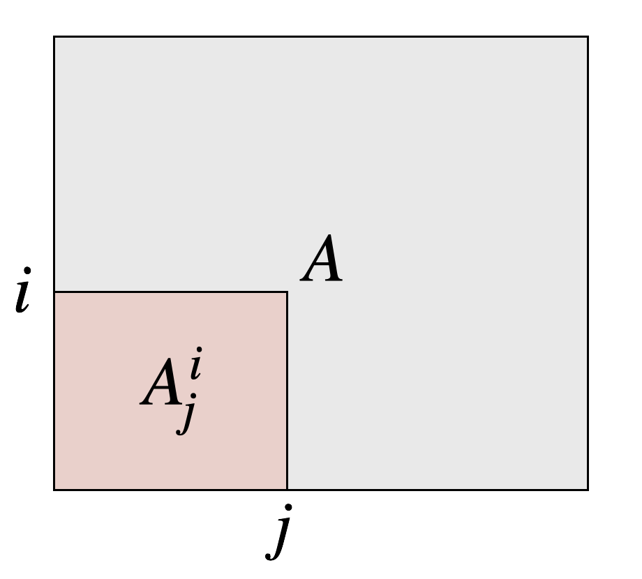

A simplicial complex K={σ:σ∈P(V)}K = \{\sigma : \sigma \in \mathcal{P}(V)\}K={σ:σ∈P(V)} over set V={v1,…,vn}V = \{v_1, \dots, v_n\}V={v1,…,vn} satisfies:
(vertex) v∈V⟹{v}∈K,(face)τ⊆σ∈K⟹τ∈K\text{(vertex) } v \in V \Longrightarrow \{v\} \in K, \quad\quad \textcolor{blue}{\text{(face)}}\quad \tau \subseteq \sigma \in K \Longrightarrow \tau \in K (vertex) v∈V⟹{v}∈K,(face)τ⊆σ∈K⟹τ∈K
A filtration K∙K_\bulletK∙ is a family { Ki }i∈I\{ \, K_i \, \}_{i\in I}{Ki}i∈I indexed over a totally ordered index set III:
Filtered
Essential
Simplexwise
⟺\Longleftrightarrow⟺
K0⊊K1⊊⋯⊊Km=K∙K_0 \subsetneq K_1 \subsetneq \dots \subsetneq K_m = K_\bulletK0⊊K1⊊⋯⊊Km=K∙
i≠ji \neq ji=j implies Ki≠KjK_i \neq K_jKi=Kj
Kj∖Ki={σj}K_j \smallsetminus K_i = \{\sigma_j\}Kj∖Ki={σj} when j=succ(i)j = \mathrm{succ}(i)j=succ(i)
Any K∙↦K_\bullet \mapstoK∙↦ essential & simplexwise via condensing + refining + reindexing maps [1]
Note here that III may be R+\mathbb{R}_+R+ or [m]={ 1,2,…,m }[m] = \{\, 1, 2, \dots, m\, \}[m]={1,2,…,m}, depending on the context!
Given a pair ( K, F )(\, K, \, \mathbb{F} \, )(K,F), a ppp-chain is a formal F\mathbb{F}F-linear combination of ppp-simplices of KKK
Given an oriented ppp-simplex σ∈K\sigma \in Kσ∈K, define its ppp-boundary as the alternating sum:
∂p(σ)=∂p([v0,v1,…,vp])=∑i=0p(−1)i[v0,…,v^i,…vp]\partial_p(\sigma) = \partial_p([v_0, v_1, \dots, v_p]) = \sum_{i=0}^p (-1)^i [v_0, \dots, \hat{v}_i, \dots v_p] ∂p(σ)=∂p([v0,v1,…,vp])=i=0∑p(−1)i[v0,…,v^i,…vp]
The operator ∂p\partial_p∂p extends linearly to ppp-chains via their constitutive simplices
Cp(K)=( K , + , × , F )C_p(K) = (\, K \, , \, + \, , \, \times \,, \, \mathbb{F} \,)Cp(K)=(K,+,×,F)
Bp(K)=(Im∘∂p+1)(K)B_p(K) = (\mathrm{Im} \circ \partial_{p+1})(K)Bp(K)=(Im∘∂p+1)(K)
Zp(K)=(Ker∘∂p)(K)Z_p(K) = (\mathrm{Ker} \circ \partial_{p})(K)Zp(K)=(Ker∘∂p)(K)
vector space of ppp-chains
boundary group
cycle group
The ppp-th homology of KKK is the quotient group Hp(K)=Zp(K)/Bp(K)H_p(K) = Z_p(K) / B_{p}(K)Hp(K)=Zp(K)/Bp(K)

Related topogical invariant: βp=dim(Hp(K))\beta_p = \mathrm{dim}(H_p(K))βp=dim(Hp(K))
Inclusions Ki⊊KjK_i \subsetneq K_jKi⊊Kj induce linear transformations hpi,jh_p^{i,j}hpi,j between homology groups
Hp(K0)→⋯→Hp(Ki)→⋯→⏟hpi,jHp(Kj)→⋯→Hp(Km)=Hp(K∙)H_p(K_0) \to \dots \to H_p(K_i) \underbrace{\to \dots \to}_{h_p^{i,j}} H_p(K_j) \to \dots \to H_p(K_m) = H_p(K_\bullet) Hp(K0)→⋯→Hp(Ki)hpi,j→⋯→Hp(Kj)→⋯→Hp(Km)=Hp(K∙)
So far, we have two invariants of KKK: Hpi,j=Im hpi,jH_{p}^{i,j} = \mathrm{Im}\,h_p^{i,j}Hpi,j=Imhpi,j and βpi,j=dim(Hpi,j)\beta_p^{i,j} = \mathrm{dim}(H_{p}^{i,j})βpi,j=dim(Hpi,j)
...but we only need βpi,j\beta_p^{i,j}βpi,j to define dgmp(K)\mathrm{dgm}_p(K)dgmp(K)
To see this, define the multiplicity μpi,j\mu_p^{i,j}μpi,j, for all 0<i<j≤m+10 < i < j \leq m + 10<i<j≤m+1:
μpi,j=(βpi,j−1−βpi,j)−(βpi−1,j−1−βpi−1,j)\mu_p^{i,j} = (\beta_p^{i,j-1} - \beta_p^{i,j}) - (\beta_p^{i-1,j-1} - \beta_p^{i-1,j}) μpi,j=(βpi,j−1−βpi,j)−(βpi−1,j−1−βpi−1,j)
An alternative definition for dgmp(K)\mathrm{dgm}_p(K)dgmp(K):
Definition The p-th persistence diagram dgmp(K)⊂Rˉ2 of K is the set of points (i,j) \fbox{ \textbf{Definition} The $p$-th persistence diagram $\mathrm{dgm}_p(K) \subset \mathbb{\bar{R}}^2$ of $K$ is the set of points $(i,j)$ } Definition The p-th persistence diagram dgmp(K)⊂Rˉ2 of K is the set of points (i,j)
The question: Suppose you wanted a continuous version of βpi,j\beta_p^{i,j}βpi,j
The rank of a linear map Φ\PhiΦ is given as the dimension of its image:
r(Φ)=rank(Φ)=dim(Im(Φ))\mathrm{r}(\Phi) = \mathrm{rank}(\Phi) = \mathrm{dim}(\mathrm{Im}(\Phi)) r(Φ)=rank(Φ)=dim(Im(Φ))
When A,B∈M(n×n)(R)A, B \in \mathcal{M}_{(n \times n)}(\mathbb{R})A,B∈M(n×n)(R), the rank function has many convenient properties:
rank-nullity
subadditive
transposition invariance
orthogonal invariance
permutation invariance
r(A)=∣A∣−null(A)\mathrm{r}(A) = \lvert A \rvert - \mathrm{null}(A)r(A)=∣A∣−null(A)
r(A+B)≤r(A)+r(B)\mathrm{r}(A + B) \leq \mathrm{r}(A) + \mathrm{r}(B)r(A+B)≤r(A)+r(B)
r(A)=r(AT)=r(ATA)=r(AAT)\mathrm{r}(A) = \mathrm{r}(A^T) = \mathrm{r}(A^T A) = \mathrm{r}(A A^T)r(A)=r(AT)=r(ATA)=r(AAT)
r(A)=r(QA)=r(AQT)\mathrm{r}(A) = \mathrm{r}(QA) = \mathrm{r}(AQ^T)r(A)=r(QA)=r(AQT) (Q\big(Q(Q := orthogonal )\big))
r(A)=r(P−1AP)\mathrm{r}(A) = \mathrm{r}(P^{-1}A P)r(A)=r(P−1AP) (P\big(P(P := permutation matrix )\big))
Let's see if we can apply some of these.
βpi,j=dim(Hpi,j)=dim(Zp(Ki)/Bp(Kj))=dim(Zp(Ki)/(Zp(Ki)∩Bp(Kj))=dim(Zp(Ki))−dim(Zp(Ki)∩Bp(Kj))\begin{align*} \beta_p^{i,j} &= \mathrm{dim}(H_p^{i,j}) \\ &= \mathrm{dim} \left( Z_p(K_i) / B_p(K_j) \right) \\ &= \mathrm{dim} \left( Z_p(K_i) / (Z_p(K_i) \cap B_p(K_j) \right) \\ &= \mathrm{dim} \left( Z_p(K_i) \right) - \mathrm{dim}\left( Z_p(K_i) \cap B_p(K_j) \right ) \end{align*} βpi,j=dim(Hpi,j)=dim(Zp(Ki)/Bp(Kj))=dim(Zp(Ki)/(Zp(Ki)∩Bp(Kj))=dim(Zp(Ki))−dim(Zp(Ki)∩Bp(Kj))
By rank-nullity, we have:
βpi,j=dim(Cp(Ki))−dim(Bp−1(Ki))−dim(Zp(Ki)∩Bp(Kj))\beta_p^{i,j} = \mathrm{dim} \left( C_p(K_i) \right) - \mathrm{dim} \left( B_{p-1}(K_i) \right) - \mathrm{dim}\left( Z_p(K_i) \cap B_p(K_j) \right ) βpi,j=dim(Cp(Ki))−dim(Bp−1(Ki))−dim(Zp(Ki)∩Bp(Kj))
Q1: How to compute βpi,j\beta_p^{i,j}βpi,j algorithically?
Q2: Is the solution to (Q1) amenable to the time-varying setting?
βpi,j=dim(Cp(Ki))⏟(1)−dim(Bp−1(Ki))⏟(2)−dim(Zp(Ki)∩Bp(Kj))⏟(3) \fbox{ $\beta_p^{i,j} = \underbrace{\mathrm{dim} \left( C_p(K_i) \right)}_{(1)} - \underbrace{\mathrm{dim} \left( B_{p-1}(K_i) \right)}_{(2)} - \underbrace{\mathrm{dim}\left( Z_p(K_i) \cap B_p(K_j) \right )}_{(3)}$ } βpi,j=(1)dim(Cp(Ki))−(2)dim(Bp−1(Ki))−(3)dim(Zp(Ki)∩Bp(Kj))
Both (1)(1)(1) are (2)(2)(2) easy to obtain. Computing (3)(3)(3) is more subtle:
PH / reduction algorithm
Gaussian elimination[1]
Anderson-Duffin formula[2]
Von-Neumann's theorem[3]
⟹ \implies⟹
∑k=1j1(lowRp+1[k]≤i)\sum_{k=1}^j \textbf{1}(\mathrm{low}_{R_{p+1}}[k] \leq i)∑k=1j1(lowRp+1[k]≤i)
( see Zomorodian & Carlsson [1] )
PZ∩B=2PZ(PZ+PB)†PBP_{\mathbf{Z} \cap \mathbf{B}} = 2 P_{\mathbf{Z}}(P_{\mathbf{Z}} + P_{\mathbf{B}})^\dagger P_{\mathbf{B}}PZ∩B=2PZ(PZ+PB)†PB
PZ∩B=limn→∞(PZPB)nP_{\mathbf{Z} \cap \mathbf{B}} = \lim\limits_{n\to \infty}\left( P_\mathbf{Z} P_\mathbf{B}\right)^nPZ∩B=n→∞lim(PZPB)n
Alternative: βpi,j=null(Δpi,j)\beta_p^{i,j} = \mathrm{null}(\Delta_p^{i,j})βpi,j=null(Δpi,j) where Δpi,j\Delta_p^{i,j}Δpi,j is the persistent Laplacian [4]
All of these rely on explicit reductions or expensive projectors. Not great!
Given A∈M(m×m)(R)A \in \mathcal{M}_{(m \times m)}(\mathbb{R})A∈M(m×m)(R), let Ai,jA^{i,j}Ai,j denote the lower-left submatrix of AAA:

Define rA(i,j):=rank(Ai,j)−rank(Ai+1,j)+rank(Ai+1,j−1)−rank(Ai,j−1)\text{Define } r_A(i,j) := \mathrm{rank}(A^{i, j}) - \mathrm{rank}(A^{i+1, j}) + \mathrm{rank}(A^{i+1, j-1}) - \mathrm{rank}(A^{i, j-1}) Define rA(i,j):=rank(Ai,j)−rank(Ai+1,j)+rank(Ai+1,j−1)−rank(Ai,j−1)
Let R=∂VR = \partial VR=∂V be the boundary matrix decomposition. The following can be shown[2]:
lowR[j]=i ⟺ rR(i,j)≠0 ⟺ r∂(i,j)≠0 ⟺ rank(Ri,j)=rank(∂i,j)\mathrm{low}_R[j] = i \iff r_R(i,j) \neq 0 \iff r_\partial(i,j) \neq 0 \iff \mathrm{rank}(R^{i,j}) = \mathrm{rank}(\partial^{i, j}) lowR[j]=i⟺rR(i,j)=0⟺r∂(i,j)=0⟺rank(Ri,j)=rank(∂i,j)
The trick: rank(Ri,j) can be deduced from rank(∂i,j), for any 1≤i<j≤m \fbox { \textbf{The trick}: $\mathrm{rank}(R^{i,j})$ can be deduced from $\mathrm{rank}(\partial^{i, j})$, for any $1 \leq i < j \leq m$ } The trick: rank(Ri,j) can be deduced from rank(∂i,j), for any 1≤i<j≤m
This observation has been used before (see [1,2]), but seems to not be well-known
This sub-matrix trick enables βpi,j\beta_p^{i,j}βpi,j to be expressed a sum of ranks of unfactored matrices
To see this
This is the first key observation of our relaxation
Consider replacing the elementary chain values as follows:
marp pbsig.md --html --allow-local-files -w
Global style
Note: $H_p(K)$ depends on the choice of $\mathbb{F}$ !
$R = \partial V$
https://iuricichf.github.io/ICT/index.html
$(1)$ is # of $p$-simplices in $K_i$ and $(2)$ is given by $\mathrm{rank}( \partial_p(K_i))$
a. Use PH / reduction algorithm: $\sum_{k=1}^j \textbf{1}(\mathrm{low}_{R_{p+1}}[k] \leq i)$ b. Use Gaussian elimination to find basis<sup>[1]</sup> c. Use Anderson-Duffin formula<sup>[2]</sup>: $P_{\mathbf{Z} \cap \mathbf{B}} = 2 P_{\mathbf{Z}}(P_{\mathbf{Z}} + P_{\mathbf{B}})^\dagger P_{\mathbf{B}}$ d. Use Von-Neumann's theorem<sup>[3]</sup>: $P_{\mathbf{Z} \cap \mathbf{B}} = \lim\limits_{n\to \infty}\left( P_\mathbf{Z} P_\mathbf{B}\right)^n$
boundary replacement